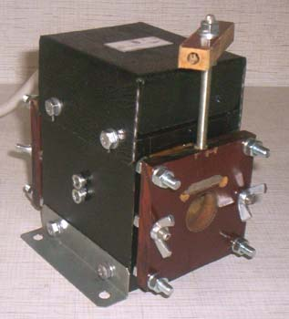
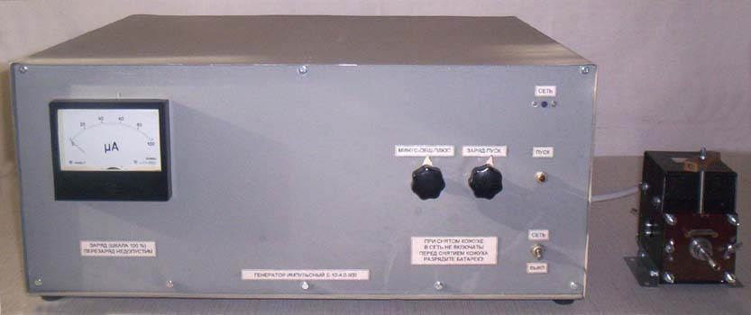

Магнитный индуктор для
импульсного диаметрального намагничивания
РЗМ-роторов турбодетандеров диаметром до 35 мм и их размагничивания

Назначение
Индуктор предназначен для работы в составе установок
намагничивания и частичного размагничивания [3] роторов турбодетандеров в
комплекте с емкостным накопителем энергии [1] не менее
4 кДж 900 В. Он позволяет производить одноосное по диаметру намагничивание до
насыщения и частичное размагничивание постоянных магнитов на основе
редкоземельных металлов (РЗМ: неодим-железо-бор, самарий-кобальт) - спеченных
или магнитопластов [2], а
также постоянных магнитов любых других составов с меньшими значениями
коэрцитивной силы.
Технические данные:
- размеры зоны намагничивания: диаметр - 35+1
мм, высота - 40+1 мм
- направление намагничивания - по диаметру зоны
намагничивания
- амплитуда магнитной индукции в зоне намагничивания от 3.5
до 4.0 Тл при амплитуде импульса тока не более 2000 А
- неоднородность магнитного поля в зоне намагничивания не
более 20 %
- длительность импульса тока не более 10 мс
- форма импульса тока произвольная (синусоидальная,
колоколообразная, экспоненциально возрастающая и убывающая)
- готовность к работе - сразу после включения
- производительность - до 30 циклов намагничивания или до
15 циклов размагничивания в час
- средняя потребляемая мощность при прохождении импульсов
тока амплитудой 2000 А и частотой 1 импульс в две минуты не превышает 100 Вт
- охлаждение естественное воздушное
- габаритные размеры не более 120 х 170 х 180 мм3
- масса не более 4.5 кг
Применение
Намагничиваемый ротор помещается в проходное отверстие
индуктора, центруется двумя фланцами таким образом, чтобы постоянный магнит
попадал в зону намагничивания между полюсными наконечниками, и закрепляется
винтовым фиксатором, расположенным на переднем фланце. На рис. 1 показан внешний
вид установки намагничивания (частичного размагничивания) в комплекте с
емкостным накопителем энергии 4 кДж 900 В [1].
Намагничивание производится одиночным импульсом тока заданной полярности при
полной зарядке емкостного накопителя. Для размагничивания используется либо
одиночный импульс обратной полярности при частичной зарядке накопителя энергии,
уровень которой подбирается экспериментально, либо серия импульсов с
чередующейся полярностью и убывающей до нуля амплитудой (выбор полярности
осуществляется посредством разъемов емкостного накопителя, амплитуда
определяется его уровнем зарядки).

Рис. 1. Установка намагничивания и частичного размагничивания
в комплекте с емкостным накопителем энергии 4 кДж 900
В [1].
Ссылки:
- Генератор мощных импульсов
тока (емкостной накопитель энергии)
- Изготовление и
применение магнитопластов (магнитоэластов)
- Установки
импульсного намагничивания и размагничивания постоянных магнитов
Словарь
терминов:
- Импульсный генератор - генератор
импульсов напряжения или тока.
- Индуктор - генератор индукции.
- Коэрцитивная сила по магнитной индукции
- напряженность размагничивающего поля, которое должно быть приложено к
предварительно намагниченному образцу, чтобы магнитная индукция в нем стала
равна нулю.
- Коэрцитивная сила по намагниченности -
напряженность размагничивающего поля, которое должно быть приложено к
предварительно намагниченному образцу, чтобы его намагниченность стала равна
нулю.
- Магнитная индукция - вектор, численно
равный пределу отношения силы, действующей со стороны магнитного поля на
элемент проводника с электрическим током, к произведению тока и длины
элемента проводника, если длина этого элемента стремится к нулю, а элемент
так расположен в поле, что этот предел имеет наибольшее значение, и
направленный перпендикулярно к направлению элемента проводника и к
направлению силы, действующей на этот элемент со стороны магнитного поля,
причем из его конца вращение по кратчайшему расстоянию от направления силы к
направлению тока в элементе проводника должно быть видно происходящим против
часовой стрелки.
- Магнитопласт - полимерный постоянный
магнит, изготовленный на основе смеси магнитотвердого порошка и связующего
полимера.
- Намагничивание - воздействие на образец
магнитным полем, вследствие которого у образца появляется отличная от нуля
остаточная намагниченность.
- Неодим-железо-бор (англ. Ne-Fe-B) -
магнитотвердый материал на основе соединения железа, неодима и бора состава
Nd2Fe14B, Nd3Fe16B, Nd4Fe28B3.
- Постоянный магнит - объект, создающий
магнитное поле за счет собственных внутренних элементарных электрических
токов, текущих без использования внешнего источника энергии в составляющем
объект материале
- Размагничивание - процедура, позволяющая
уменьшить остаточную намагниченность образца до таких значений, когда ею
можно пренебречь.
- Самарий-кобальт (англ. Sm-Co) -
магнитотвердый материал на основе интерметаллического соединения самария и
кобальта состава SmCo5. В обозначении марки (например, КС37)
буквы обозначают состав (К - кобальт, С - самарий), а число (37) -
процентное содержание самария.
10.08.2017
Альтернативные источники
энергии
Компьютеры и
Интернет
Магнитные поля
Механотронные системы
Перспективные
разработки
Электроника и
технология
Главная страница